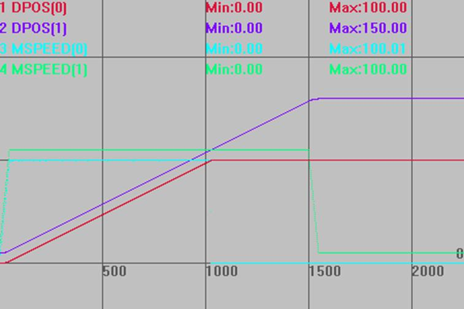
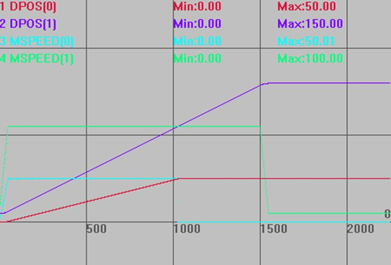
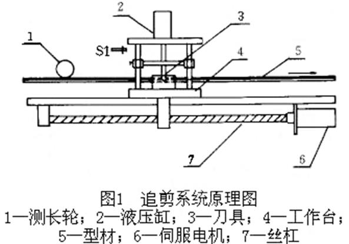
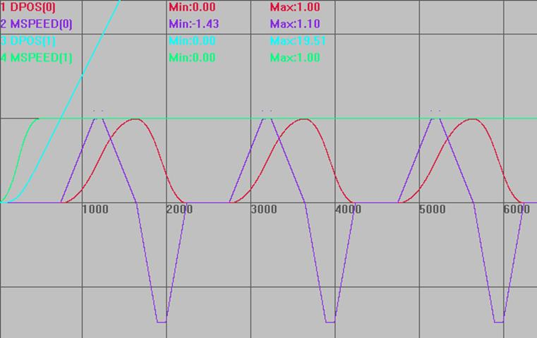
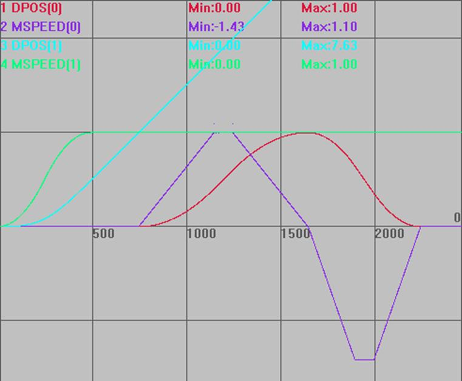
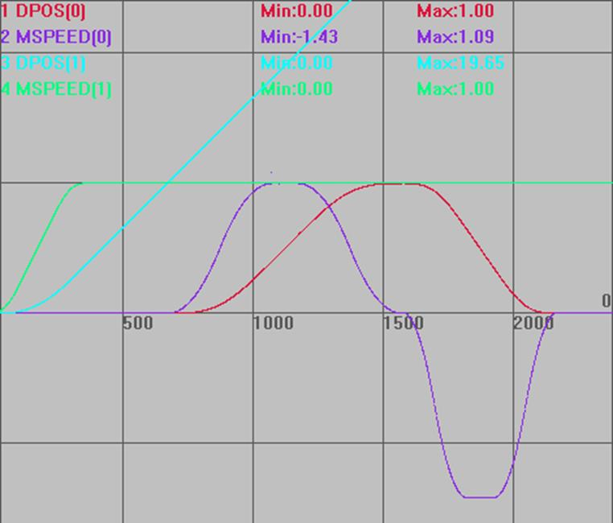

|
类型 |
同步运动指令 | ||||||||||||||||||||||||
|
描述 |
此指令用于自定义的凸轮运动，该运动带有可设置的加减速阶段。
被连接轴为参考轴，连接轴为跟随轴。 连接轴的距离分成3个阶段应用于参考轴的运动，分别是加速部分、匀速部分和减速部分。
在加速和减速阶段为了与速度匹配，link distance（基本轴运动距离）必须是distance（跟随轴运动距离）的两倍。 请确保指令传递的距离参数*units是整数个脉冲，否则出现浮点数会导致运动有细微误差。 | ||||||||||||||||||||||||
|
语法 |
MOVELINK (distance, link dist, link acc, link dec, link axis[,link options] [,link pos][,link offpos]) distance：从连接开始到结束，跟随轴移动的距离，此参数可正可负，为正数正方向跟随，为负数负方向跟随，采用units单位 link dist：参考轴在连接的整个过程中移动的绝对距离，采用units单位 link acc：在跟随轴加速阶段，参考轴移动的绝对距离，采用units单位 link dec：在跟随轴减速阶段，参考轴移动的绝对距离，采用units单位 注：如果参数3和参数4的和大于第2个参数，他们会被自动按比例减小，使其和值与第2个参数值相等 link axis：参考轴的轴号 link options：连接模式选项，不同的二进制位代表不同的意义
link pos：当link options参数设置为2时，该参数表示基本轴在该绝对位置值时，连接开始 link offpos：当link_options参数bit4置为1时，该参数表示主轴已经运行完的相对位置。20170428以上固件支持 | ||||||||||||||||||||||||
|
适用控制器 |
通用 | ||||||||||||||||||||||||
|
例子 |
例一： RAPIDSTOP(2) WAIT IDLE(0) WAIT IDLE(1) BASE(0,1) '轴0为跟随轴，轴1为参考轴 UNITS=100,100 ATYPE=1,1 DPOS=0,0 SPEED=100,100 ACCEL=2000,2000 DECEL=2000,2000 TRIGGER '自动触发示波器 MOVELINK(100,100,0,0,1) AXIS(0) '不设置加减速阶段时，效果与CONNECT相同，区别在不需要考虑UNITS的不同，且不会有累积误差。此时运动比例1:1 MOVE(150) AXIS(1) '轴1运动150，轴0跟随轴1运动完100
插补轨迹与速度曲线 DPOS(0)垂直刻度100，无偏移 DPOS(1)垂直刻度100，偏移10 MSPEED(0)垂直刻度100，无偏移 MSPEED(1)垂直刻度100，偏移10 
MOVELINK(50,100,0,0,1) 竖直刻度同上 
例二：追剪应用  型材持续运动，工作台先静止；直到型材持续运动了某段距离，工作台开始加速；待工作台速度与型材一致，然后开关S1工作刀具下剪，剪切完后刀具回升；工作台开始减速，然后退回起始点。重复过程，剪切得到设定长度的型材。
假设要切的型材长度为4m，工作台运行距离1m，轴1为基本轴（型材传送），轴0为跟随轴（追剪工作台），OUT0口控制刀具，飞剪部分程序如下： RAPIDSTOP(2) WAIT IDLE(0) WAIT IDLE(1) BASE(0,1) UNITS=10000,10000 ATYPE=1,1 DPOS=0,0 SPEED=1,1 '型材运行速度1m/s,60m/min ACCEL=2,2 DECEL=2,2
VMOVE(1) AXIS(1) '型材持续运动 TRIGGER '自动触发示波器
WHILE 1 BASE(0) MOVELINK(0,1,0,0,1) AXIS(0) '型材运动1m前，工作台静止 MOVELINK(0.4,0.8,0.8,0,1) AXIS(0) '工作台加速阶段 MOVELINK(0.2,0.2,0,0,1) AXIS(0) '速度同步跟随0.2m MOVE_OP2(0,on,1000) '刀具下剪，1s后回升(时间要计算好) MOVELINK(0.4,0.8,0,0.8,1) AXIS(0) '工作台减速阶段 MOVELINK(-1,1.2,0.5,0.5,1) AXIS(0) '工作台回到起始点 WEND
运动轨迹和速度曲线： DPOS(0)垂直刻度1，无偏移 MSPEED(0)垂直刻度1，无偏移 DPOS(1)垂直刻度1，无偏移 MSPEED(1)垂直刻度1，无偏移  一个周期内的运行曲线：  工作台(跟随轴)的运动距离：0.4(加速阶段)+0.2(跟随同步)+0.4(减速阶段)=1m单位，然后-1m返回运动。 型材(参考轴)的运动距离：1+0.8+0.2+0.8+1.2=4m单位，全程匀速。
例三：设置link options bit3=1时，从轴追剪轴采用S曲线加减速 RAPIDSTOP(2) WAIT IDLE(0) WAIT IDLE(1) DATUM(0) BASE(0,1) UNITS=10000,10000 ATYPE=1,1 DPOS=0,0 SPEED=1,1 ''型材运行速度1m/s,60m/min ACCEL=2,2 DECEL=2,2 SRAMP=200,200
VMOVE(1) AXIS(1) '型材持续运动 TRIGGER '自动触发示波器
WHILE 1 BASE(0) MOVELINK(0,1,0,0,1,8) AXIS(0) '型材运动1m前，工作台静止 MOVELINK(0.4,0.8,0.8,0,1,8) AXIS(0) '工作台加速阶段 MOVELINK(0.2,0.2,0,0,1,8) AXIS(0) '速度同步跟随0.2m MOVE_OP2(0,on,1000) '刀具下剪，1s后回升(时间要计算好) MOVELINK(0.4,0.8,0,0.8,1,8) AXIS(0) '工作台减速阶段 MOVELINK(-1,1.2,0.5,0.5,1,8) AXIS(0) '工作台回到起始点 WEND
运动轨迹和速度曲线： DPOS(0)垂直刻度1，无偏移 MSPEED(0)垂直刻度1，无偏移 DPOS(1)垂直刻度1，无偏移 MSPEED(1)垂直刻度1，无偏移  | ||||||||||||||||||||||||
|
相关指令 |